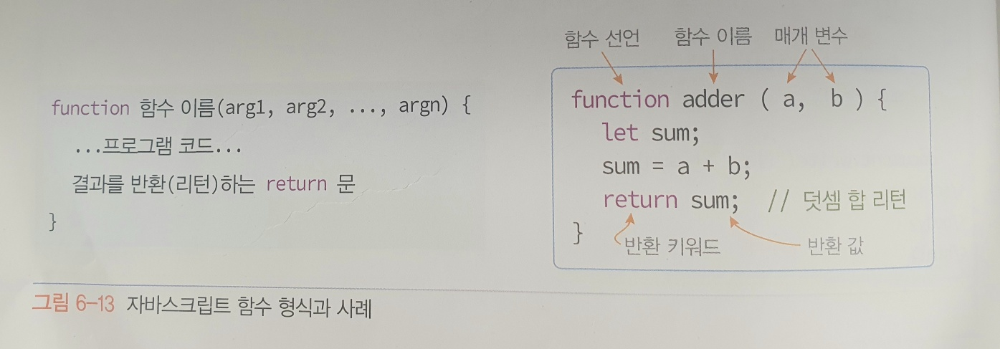

함수
함수는 데이터를 전달받아 처리한 후 결과를 돌려주는(리턴하는) 코드 블록이다.
함수 개념
데이터를 전달받아 정해진 작업을 수행하고 그 결과를 돌려(리턴) 주도록 작성된 코드 블록이 함수이다.
함수는 전달받는 데이터 없이 정해진 작업을 하기도 하고, 결과를 돌려주지 않기도 한다.
함수의 구성

- function - 함수 선언을 표시하는 키워드
- 함수 이름 - 개발자가 정하는 것으로 목적에 맞게 이름지정
- arg 1, arg 2... - 함수를 호출하는 곳으로부터 값을 받는 매개 변수
- 프로그램 코드 - 함수의 작업을 실행하는 JS코드
- return 문 - 함수의 실행을 종료하고 호출한 곳으로 되돌아 가면서 함수의 실행 결과를 반환하는 문
함수 호출
함수에게 일을 지시하고 결과를 받는 것을 함수 호출이라고 부른다.
함수 호출에는 다음 2가지 방법이 있다.
- 변수이름 = 함수이름(arg1, arg2, ... ); // 함수 호출 후 리턴값 받음
- 함수이름(arg1, arg2, ... ); // 함수 호출 후 리턴값 받지않음
함수가 아무 값도 리턴하지 않거나, 리턴한다고 해도 리턴 받는 값이 필요 없으면 두 번째 경우처럼 함수만 호출하면 된다.